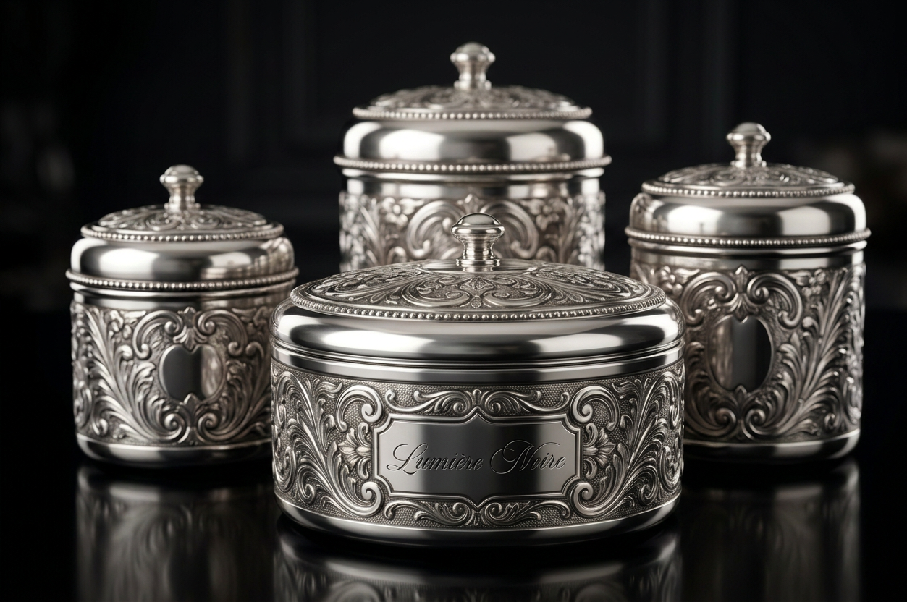

N° 02 — Brand Identity & Packaging
A luxury night-time skincare brand built around ritual, restraint, and the quiet extravagance of doing nothing at all.
01
Lumière Noire exists to turn the ordinary act of going to sleep into a ritual of devotion — a nightly return to self, wrapped in the cool, quiet luxury of midnight.
We believe skincare shouldn’t just repair skin while you rest; it should make rest itself feel sacred, safe, and worth prioritising. Cool blues, deep blacks, and the glint of silver aren’t just our palette — they’re a promise of what waking up feels like when you’ve spent the night in luxury rather than routine.
“Effortless evolution.”
02
A brand that feels reverent rather than clinical — skincare as devotion, not maintenance.
Comfort-first visuals and language. The night is a place to feel held, not exposed.
Self-care as a return to stillness — a deliberate pause, never rushed.
Jewelry-inspired, not heritage-inspired. Wealth expressed through restraint, not ornament.
03
Two packaging concepts were developed: a minimalist spiral-lidded jar, and an ornately engraved, baroque-style canister. The spiral concept was selected as the primary direction.
Selected
The concentric spiral echoes the brand’s water-and-gel design language, and its clean surface lets the wordmark stand alone — instantly recognisable from a single glance. Cool, reflective, quietly opulent.
Archived
Beautifully crafted, but its ornate detailing reads as heritage and royal luxury — a different story than the one Lumière Noire is telling. Held for a future limited-edition or gifting line.
04
05

The archived engraved canister concept — beautifully crafted, but held back for a future limited-edition or gifting line rather than the core packaging system.
06
The complete brand guidelines, mockups and packaging system, live in Figma.